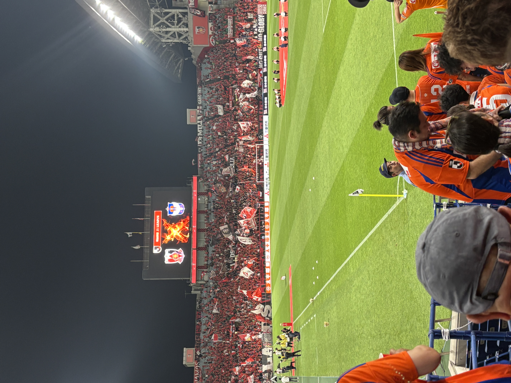
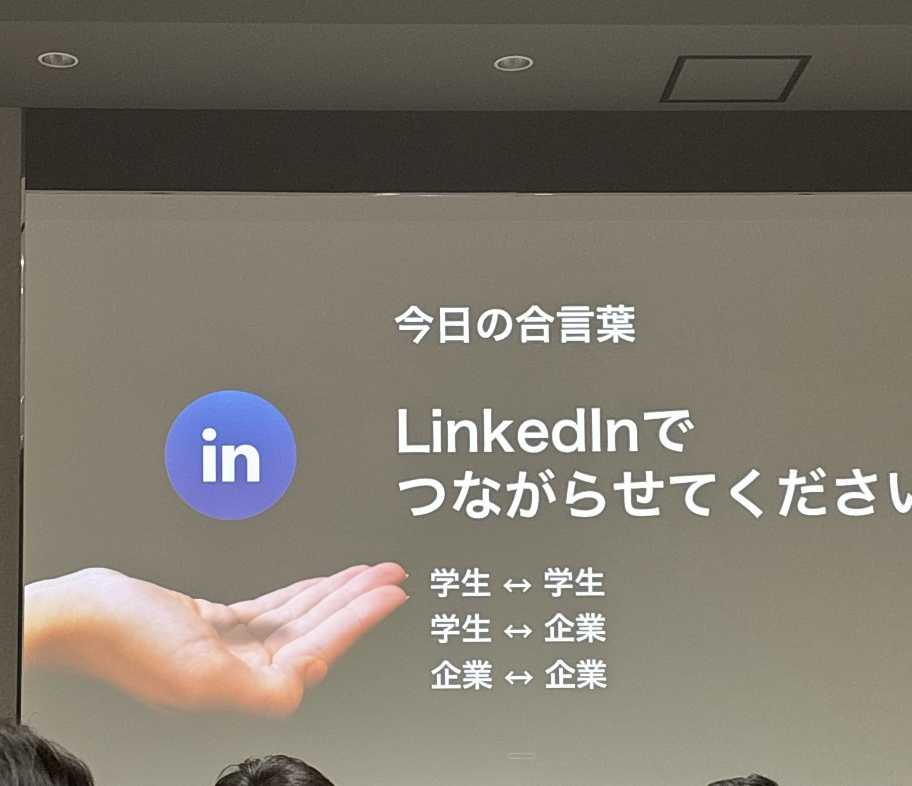

中村釉のページへようこそ
Welcome to My website

プロフィール
| 出身 | 新潟 |
|---|---|
| 趣味 | サッカー観戦 |
| 学部 | 情報学部 |
大学生になって取り組んだこと
LinkedIn Students Career Week 2025秋＆LinkedIn Students Career Week 2026春に参加してきました！

これは2025年秋のイベントの様子です。

これは2026年春のイベントの様子です。